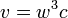
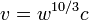

Warp drive (Star Trek)
|
|
This section has multiple issues. Please help improve it or discuss these issues on the talk page.
|
{kind=link}
Warp drive is a fictional faster-than-light (FTL) propulsion system in the setting of many science fiction works, most notably Star Trek. A spacecraft equipped with a warp drive may travel at velocities greater than that of light by many orders of magnitude, while circumventing the relativistic problem of time dilation. Some of the other fictions in which warp drive technology is featured include: Stars!, Freelancer, EVE Online, Earth and Beyond, StarCraft, Mass Effect, DarkSpace, Starship Troopers, Astro Empires, Doctor Who, Stargate franchise and Star Ocean. In contrast to many other fictional FTL technologies, such as a "jump drive" or the Infinite Improbability Drive, the warp drive does not permit instantaneous travel between two points; instead, warp drive technology creates an artificial "bubble" of normal space-time that surrounds the spacecraft (as opposed to entering a separate realm or dimension like hyperspace, as is used in the Star Wars, Warhammer 40,000, Babylon 5 and Andromeda universes). Consequently, spacecraft at warp velocity can continue to interact with objects in "normal space".
Contents |
[edit] The Original Series: establishing a background
Warp drive is one of the fundamental features of the Star Trek storyline; in the first pilot episode of Star Trek: The Original Series, "The Cage", it is referred to as a "hyperdrive"/"time warp" drive combination, and it is stated that the "time barrier" has been broken, allowing a group of stranded interstellar travelers to return to Earth far sooner than would have otherwise been possible.
The episode "Metamorphosis", also from the original series, establishes a backstory for the invention of warp drive, stating that Zefram Cochrane discovered the 'space warp'. Cochrane is repeatedly referred to afterwards, but the exact details of the first warp trials were not shown until the second Star Trek: The Next Generation movie, Star Trek: First Contact. The movie depicts Cochrane as having invented warp drive on Earth in 2063 (two years after the date speculated by the first edition of the Star Trek Chronology). By using a matter/antimatter reactor to create plasma, and by sending this plasma through warp coils, he created a warp bubble which he could use to move a craft into subspace and hence exceed the speed of light. This successful first trial led directly to first contact with the Vulcans.
The later prequel series Star Trek: Enterprise describes the warp engine technology as a 'Gravimetric Field Displacement Manifold' (Commander Tucker's tour, "Cold Front"), and describes the device as being powered by an anti-matter/matter reaction which powers the two separate nacelles (one on each side of the ship) to create a displacement field (the aforementioned "bubble") The episode also firmly establishes that many other civilizations had warp drive before humans; First Contact co-writer Ronald D. Moore suggested that Cochrane's drive was in some way superior to forms that existed beforehand, and was gradually adopted by the galaxy at large.[1] Throughout the series, the viewer is made aware that the Vulcans have more advanced warp drive technology than humans even in the 22nd century. Enterprise, set in 2151 onwards, follows the voyages of the first human ship capable of traveling at warp factor 5.2 which under the old warp table formula, is about 140 times the speed of light. In the episode "Broken Bow", Capt. Archer equates warp 4.5 as "...Neptune and back [from Earth] in six minutes."
[edit] The Next Generation onwards
Plots involving the Enterprise traveling beyond warp 10 were once in the original series (such as warp 14.1 in That Which Survives), but for The Next Generation it was decided that these would no longer be featured. A new warp scale was drawn up, with warp factor 10 set as an unattainable maximum. This is described in some technical manuals as Eugene's Limit, in homage to creator/producer Gene Roddenberry. Normal maximum warp in the original series was warp 8. The warp factors above warp 10 in TOS, such as the one above, were slower than warp 10 on the new scale, which reaches an asymptote at warp 10, representing infinite speed in accordance with the limit imposed by the producers. Star Trek: Voyager episode "Threshold" concurred with this: the characters ruled that reaching the speed of warp 10 was impossible. In spite of this, they went on to achieve the speed, experiencing a peculiar side effect: they underwent a [reversible] process of hyper-evolution culminating in their transformation into anthropomorphic newts. In this episode, Tom Paris explains that, while traveling at warp 10, he was simultaneously present in every part of the universe. At this speed, the shuttlecraft Cochrane's sensors are able to collect such enormous amounts of telemetry that the shuttle's storage capacity is completely filled.
The limit of 10 did not entirely stop warp inflation. By the mid-24th century, the Enterprise-D could travel at warp 9.8 at "extreme risk", while normal maximum operating speed was warp 9.6 and maximum rated cruise was warp 9.2. In the episode "Where No One Has..." the Enterprise-D was shown to exceed Warp 10, traveling a billion light-years from their home galaxy in a matter of seconds. The Intrepid-class starship Voyager has a maximum sustainable cruising speed of warp 9.975, the Enterprise-E can go even faster at Warp 9.985. In the alternative future depicted in "All Good Things..." (the final episode of the Star Trek:TNG), Federation starships travel at warp 13, although this is most likely due to a likely restructuring of the warp scale, perhaps putting warp 15 at representing infinite velocity.
[edit] Warp velocities
Warp drive velocity in Star Trek is generally expressed in "warp factor" units, which—according to the Star Trek Technical Manuals—correspond to the magnitude of the warp field. Achieving warp factor 1 is equivalent to breaking the light barrier, while the actual velocity corresponding to higher factors is determined using an ambiguous formula. Several episodes of the original series placed the Enterprise in peril by having it travel at high warp factors; at one point in "That Which Survives" the Enterprise traveled at a warp factor of 14.1. In the Star Trek: The Next Generation episode "The Most Toys" the crew of Enterprise-D discovers that the android Data may have been stolen while on board another ship, Jovis. At this point the Jovis, which has a maximum warp factor of 3 has had a 23 hour head start which the Enterprise-D figures puts her anywhere within a 0.102 light year radius of her last known position. However, the velocity [in present dimensional units] of any given warp factor is rarely the subject of explicit expression, and travel times for specific interstellar distances are not consistent through the various series.
According to the Star Trek episode writer's guide for The Original Series, warp factors are converted to multiples of c with the cubic function , where w is the warp factor, is the velocity, and c is the speed of light. Accordingly, "warp 1" is equivalent to the speed of light, "warp 2" is 8 times the speed of light, "warp 3" is 27 times the speed of light, etc.
{kind=link}
For Star Trek: The Next Generation and the subsequent series, Star Trek artist Michael Okuda devised a formula based on the original one but with important differences. For warp factors 1 through 9, . In the half-open interval from warp 9 to warp 10, the exponent of w increases toward infinity. Thus, in the Okuda scale, warp velocities approach warp 10 asymptotically. There is no exact formula for this interval because the quoted velocities are based on a hand-drawn curve; what can be said is that at velocities greater than warp 9, the form of the warp function changes because of an increase in the exponent of the warp factor . Due to the resultant increase in the derivative, even minor changes in the warp factor eventually correspond to a greater than exponential change in velocity. In the episode "Threshold", Tom Paris breaks the warp 10 threshold.
Exact velocities were only given in the Voyager episode "The 37's" where Tom Paris describes Voyager's velocity at warp factor 9.9 (under the new warp table formula) as being about 4 billion miles per second, which would be about 21,500 times the speed of light (although Voyager cannot maintain this velocity for very long). Voyager was about 70,000 light-years away from home. Simple calculation reveals that it would take "just" about 3.3 years to travel such distance.
[edit] Slingshot effect
A curious extension of warp travel which has been shown throughout Star Trek is the "Slingshot Effect". First discovered accidentally in "Tomorrow Is Yesterday" (1967), one of the earlier episodes of the original Star Trek series, it is a method of time travel. Whereas the actual procedure is intentionally obscure, it involved traveling at a high warp velocity (depicted in Star Trek IV: The Voyage Home to be over warp 9.8) in the direction of a star, on a precisely calculated "slingshot" path; if successful, the ship is caused to travel to a desired point, past or future. The same technique was used later in the episode "Assignment: Earth" (1968) for historic research — in this episode, the warp factor required for "time warp" is given the name "light speed breakaway factor" — the term "time warp" being established in Star Trek IV. The technique was mentioned as a viable method of time travel in the TNG episode "Time Squared" (1989).
This 'slingshot' effect has been explored in theoretical physics: it is hypothetically possible to slingshot oneself 'around' the event horizon of a black hole. The result of such a maneuver would cause time to pass at a faster rate, relative to the ship within the event horizon. Such a journey would, unfortunately, be a 'one-way' trip into the future — the pilot of the craft would not have 'traveled through time' in the classical sense, but would instead have merely 'skipped over' the intervening years. Travel in entropic directions other than forwards remain impossible to ascertain within the rubric of Special Relativity, but the "Time Warp" drive seen in "The Cage" (TOS) may explain some of the issues.
Fans of the show and films have noted that the Slingshot involves a star, rather than a black hole, and the most normal consensus from its use concerns the nature of warp travel and warp velocities. A black hole is noteworthy for its singularity and associated event horizon, where not even light possesses escape velocity. Warp-drive and other transluminal vehicles would however be able to escape a black hole event horizon, as they are capable of speeds greater than c. Stars do not possess an event horizon, as their escape velocities are considerably lower than those of black holes. They do however have very great masses. A vessel able to move at transluminal velocities would then be able to take advantage of relativistic physics: interaction with the mass of non-black hole stellar mass at transluminal velocities is very similar to the interaction between a subluminal vessel and a black hole event horizon, in terms of relativistic boundary interactions and equivalence of energy. A warp-ship, then, is able to perform as its own 'event-horizon' when interacting with a stellar mass.
[edit] Warp core
A primary component of the warp drive method of propulsion in the Star Trek universe is the "gravimetric field displacement manifold," more commonly referred to as a warp core. It is a fictional reactor which taps the energy released in a matter-antimatter annihilation to provide the energy necessary to power a starship's warp drive, allowing faster-than-light travel. Starship warp cores generally also serve as powerplants for other primary ship systems.
When matter and antimatter come into contact, they annihilate — both matter and antimatter are converted directly and entirely into enormous quantities of energy, as electromagnetic radiation. In the Star Trek universe, fictional "dilithium crystals" are used to regulate this reaction. These crystals are described as being non-reactive to anti-matter when bombarded with high levels of radiation. Usually, the reactants are deuterium, an isotope of hydrogen, and antideuterium (its antimatter counterpart). In The Original Series and in-universe chronologically subsequent series, the warp core reaction chamber is often referred to as the "dilithium intermix chamber" or the "matter/antimatter reaction chamber", dependent upon the ship's intermix type. The reaction chamber is surrounded by powerful magnetic fields to contain the anti-matter. If the containment fields ever fail, the subsequent interaction of the antimatter fuel with the container walls would result in a catastrophic release of energy, with the resultant explosion capable of utterly destroying the ship. Such "warp core breaches" are used as plot devices in many Star Trek episodes. An intentional warp core breach can also be deliberately created, as one of the methods by which a starship can be made to self-destruct.
[edit] See also
{kind=link}
[edit] Notes
- When Stephen Hawking guest starred on the Star Trek: The Next Generation episode "Descent", he was taken on a guided tour of the set. Pausing in front of the warp core set piece, he remarked, "I'm working on that".[2]
- ^ http://memory-alpha.org/wiki/Memory_Alpha:AOL_chats/Ronald_D._Moore/ron063.txt
- ^ William Shatner; Chip Walter (2002). I'm Working on That: A Trek From Science Fiction to Science Fact. Simon and Schuster. ISBN 0-671-04737-X.
[edit] External links
- Warp drive at Memory Alpha (a Star Trek wiki)
- Warp core at Memory Alpha (a Star Trek wiki)
- Transwarp drive at Memory Alpha (a Star Trek wiki)
- Quantum slipstream drive at Memory Alpha (a Star Trek wiki)
- Warp Drive, When? A NASA feasibility article
- Special Relativity Simulator What would things look like at near-warp speeds?
- Alcubierre Warp Drive at the Encyclopedia of Astrobiology, Astronomy, and Spaceflight
- "Warp drive possible". BBC News. 1999-06-10. http://news.bbc.co.uk/2/hi/science/nature/364496.stm. Retrieved 2008-08-05.
|
||||||||
|
||||||||||||||||||||||||||||||||||||||||||||||||||||||||||||||||||||||